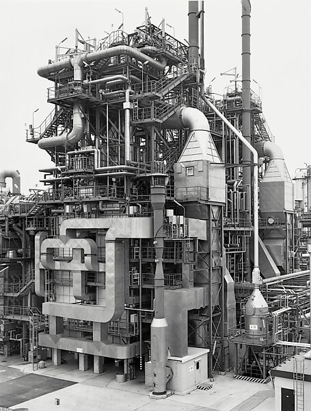
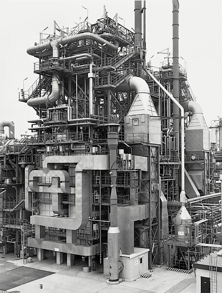

Typologies
Bernd and Hilla Becher
Bernd and Hilla Becher are renowned for their systematic and meticulous photographic typologies of industrial architecture. The German duo worked collaboratively from the late 1950s until Hilla's death in 2015, documenting structures such as water towers, gas tanks, blast furnaces, and coal bunkers. Their work is characterized by a strict, consistent approach to capturing these edifices: frontal perspectives, overcast skies to minimize shadows, and black-and-white film to emphasize form and texture. By presenting these photographs as grids or series, the Bechers encouraged viewers to focus on the subtle variations within similar structural types, highlighting the interplay between function, design, and aesthetics.
The Bechers’ typologies serve as a visual archive of industrial heritage, chronicling a rapidly vanishing landscape as modernization and deindustrialization altered the built environment. Their work transcends mere documentation; it blends the rigor of scientific classification with the poetry of art. Through their systematic comparisons, they illuminate the ingenuity of engineering solutions while inviting contemplation on the relationship between architecture and its cultural, economic, and historical contexts. The aesthetic austerity of their images mirrors the utilitarian nature of their subjects, creating a body of work that resonates with both technical precision and artistic beauty.
Their legacy has had a profound influence on contemporary art and photography, particularly within the Düsseldorf School, which includes prominent figures such as Andreas Gursky, Candida Höfer, and Thomas Struth, who were students of the Bechers. By emphasizing seriality, objectivity, and an almost anthropological approach to their subjects, the Bechers redefined the boundaries of photography as an art form. Their typologies not only preserve the memory of industrial architecture but also challenge viewers to reconsider the artistic potential of the everyday and the overlooked.
 
